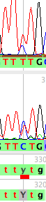
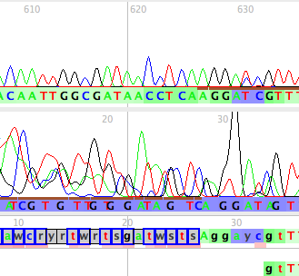
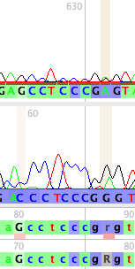
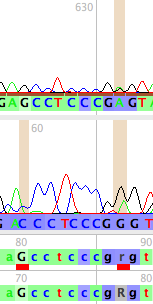

Chromaseq can highlight conflicts among reads and sequences. There are three primary types conflict displayed:
- Conflict between two reads
- Conflict between the source read and a higher quality read
- Conflict between a read and the base in the matrix
Conflicts between two reads
If Chromatograms>Show Read-Read Conflict is turned on (which it is by default), then if the base call Phred makes for one read contradicts that made at the same site in another read, then a pink or red bar will be shown under the Original Untrimmed sequence. In the following image, the middle site in the top read is called as a T, wherease in the bottom read it is called a C. This conflict is shown as a red bar:

By default, the higher the minimum quality scores of the conflicting reads at that site, the darker the red will be; if one of the conflicting reads has a low quality score at that site, below a specified threshold, then the bar will be pink, and will be increasingly pale as the quality score of the conflicting read decreases. You can specify the threshold value using the Chromatograms>Dim Conflict Marker Threshold. If you wish to always have the conflicts shown with undimmed, red bars, then uncheck Chromatograms>Dim Conflict Markers if Low Quality.
Conflicts between the source read and a higher quality read
Chromaseq by default will also draw a box around any base in the Original Untrimmed sequence for which there is a conflict between the source read's called base and a base of higher quality in another read. This is common at the ends of sequences, where Phrap chooses a clearly inferior read as its source read; these bases are normally trimmed by Chromaseq. For example, in this contig, many of the bases at the 5' end have the lower read as their source read, but the upper read, with conflicting bases, is clearly superior, and the boxes around the bases in the Original Untrimmed sequence indicate this:

For a box to be shown, the source read must be at least 10 units lower in quality score than the conflicting, higher-quality read at that site. If the source read is more than 20 units lower in quality, the box shown around the base is blue and thickened. In summary, if there is a conflicting higher-quality read at that site that is
- 0-9 quality units better than source read, no box is shown
- 10-19 quality units better than source read, a thin black box is shown
- ≥20 quality units better than source read, a thick blue box is shown
You can turn this display off or on using the Chromatograms>Show Source Read Conflicts with Higher Quality Read.
Conflicts between a read and the base in the matrix
If you turn on Chromatograms>Show Read Matrix Conflict (which by default is off), then Chromaseq will display a brown bar at each site in a read whose called base conflicts with the base present in the sequence in the matrix:

By default, if the quality score of the read at that site is below a threshold, the brown bar will be dimmed, and will be dimmer for lower qualities. You can specify the threshold value using the Chromatograms>Dim Conflict Marker Threshold. If you wish to always have the conflicts shown with undimmed, red bars, then uncheck Chromatograms>Dim Conflict Markers if Low Quality. If you turn off the dimming, the conflict markers will be shown in their full color:
